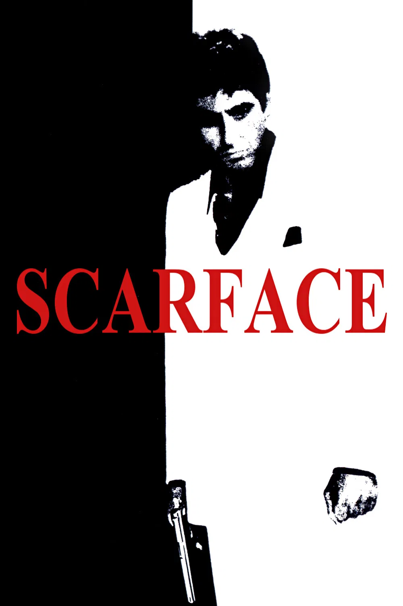

Scarface
Diretor: John G. Avildsen
Com: Al Pacino, Michelle Pfeiffer, Steven Bauer e Robert Loggia
Censura:18 anos
Tempo de duração: 170 min
Sinopse: Um criminoso cubano exilado (Al Pacino) vai para Miami e em pouco tempo está trabalhando para um chefão das drogas. Sua ascensão na quadrilha é meteórica, mas quando ele começa a sentir interesse na amante do chefe (Michelle Pfeiffer) este manda matá-lo. No entanto ele escapa do atentado, mata o mandante do crime, fica com a amante dele - mas simultaneamente sente desejos incestuosos por sua irmã (Mary Elizabeth Mastrantonio) - e assume o controle da quadrilha.